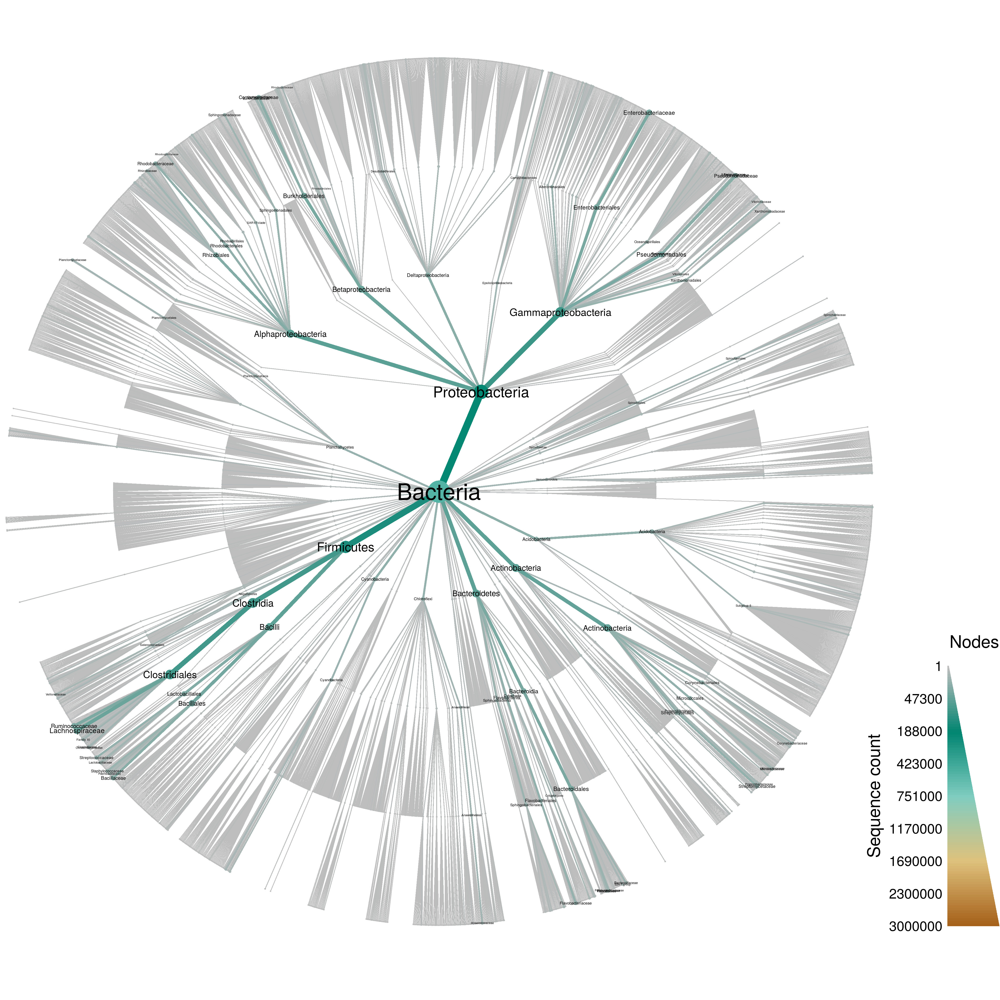
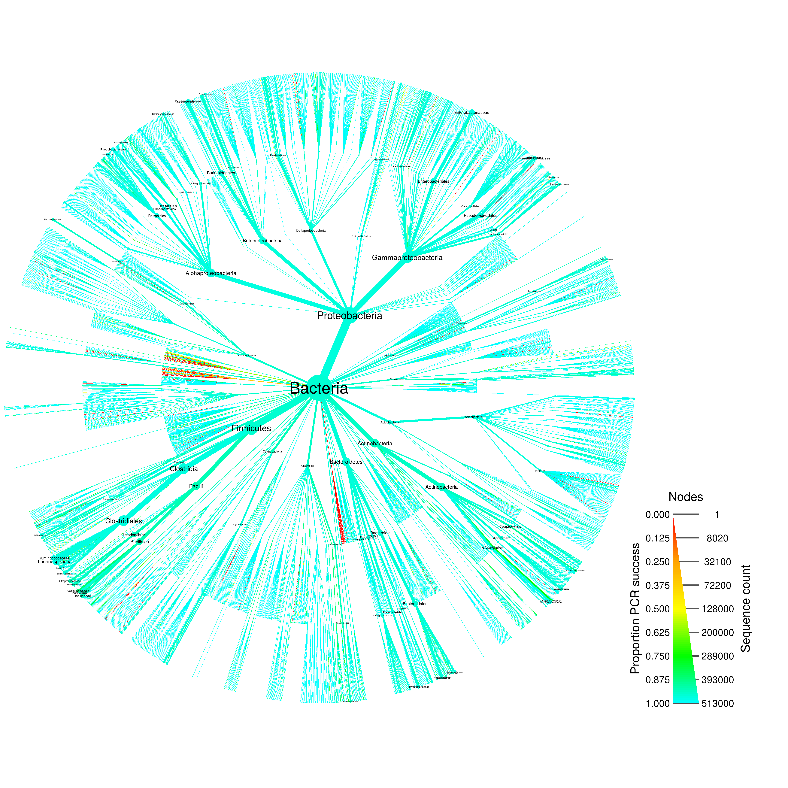
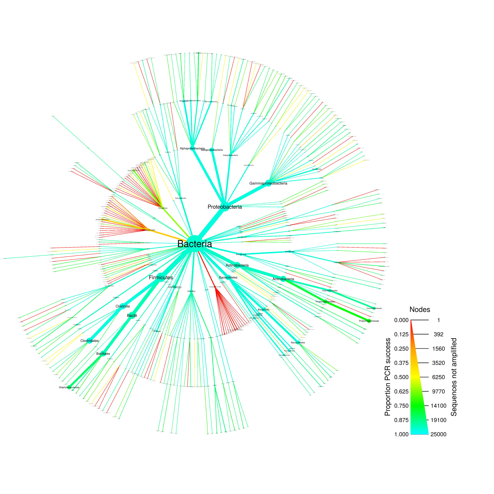

NOTE: This analysis requires at least 10Gb of RAM to run.
input_folder <- "raw_input"
output_folder <- "results"
output_format <- ".pdf"size_range <- c(0.0004, 0.015)
label_size_range <- c(0.001, 0.02)
all_size_interval <- c(1, 3000000)
pcr_size_interval <- c(1, 25000)
label_max <- 100
max_taxonomy_depth <- 4
min_seq_count <- NULL
just_bacteria <- TRUE
max_mismatch <- 10 # percentage mismatch tolerated in pcr
pcr_success_cutoff <- 0.90 # Used to subset for graphing
min_seq_length <- 1200 # Use to encourage full length sequences
forward_primer = c("515F" = "GTGYCAGCMGCCGCGGTAA")
reverse_primer = c("806R" = "GGACTACNVGGGTWTCTAAT")
pcr_success_color_scale = c("red", "orange", "yellow", "green", "cyan")The code below parses and subsets the entire SILVA non-redundant reference database. The object made is quite large.
library(metacoder)
file_path <- file.path(input_folder, "SILVA_123.1_SSURef_Nr99_tax_silva.fasta")
system.time(silva <- extract_taxonomy(seqinr::read.fasta(file_path, as.string = TRUE),
regex = "^(.*?) (.*)$",
key = c(id = "obs_info", "class"),
class_sep = ";"))## user system elapsed
## 641.249 1.846 644.227print(silva)## `taxmap` object with data for 147708 taxa and 598470 observations:
##
## ----------------------------------------- taxa -----------------------------------------
## 1, 2, 3, 4, 5, 6, 7 ... 147702, 147703, 147704, 147705, 147706, 147707, 147708
##
## -------------------------------------- taxon_data --------------------------------------
## # A tibble: 147,708 x 3
## taxon_ids supertaxon_ids name
## <chr> <chr> <chr>
## 1 1 <NA> Archaea
## 2 2 <NA> Bacteria
## 3 3 <NA> Eukaryota
## 4 4 1 Aenigmarchaeota
## 5 5 1 Aigarchaeota
## 6 6 1 Ancient Archaeal Group(AAG)
## 7 7 1 Crenarchaeota
## # ... with 1.477e+05 more rows
##
## --------------------------------------- obs_data ---------------------------------------
## # A tibble: 598,470 x 3
## obs_taxon_ids id
## <chr> <chr>
## 1 143243 >AB001438.1.1662
## 2 111186 >AB006051.1.1796
## 3 116163 >FJ911802.1.1606
## 4 115769 >FJ911814.1.1608
## 5 115905 >FJ911819.1.1607
## 6 115859 >FJ911835.1.1585
## 7 115926 >FJ911842.1.1603
## # ... with 5.985e+05 more rows, and 1 more variables: sequence <chr>
##
## ------------------------------------- taxon_funcs -------------------------------------
## n_obs, n_obs_1, n_supertaxa, n_subtaxa, n_subtaxa_1, hierarchiesif (! is.null(min_seq_count)) {
system.time(silva <- filter_taxa(silva, n_obs >= min_seq_count))
}
if (just_bacteria) {
system.time(silva <- filter_taxa(silva, name == "Bacteria", subtaxa = TRUE))
}## user system elapsed
## 247.269 1.776 251.620if (! is.null(max_taxonomy_depth)) {
system.time(silva <- filter_taxa(silva, n_supertaxa <= max_taxonomy_depth))
}## user system elapsed
## 26.958 0.036 27.032print(silva)## `taxmap` object with data for 5006 taxa and 513121 observations:
##
## ----------------------------------------- taxa -----------------------------------------
## 2, 3423, 3491, 3492, 3493 ... 104672, 104673, 104674, 104675, 104676, 104677
##
## -------------------------------------- taxon_data --------------------------------------
## # A tibble: 5,006 x 3
## taxon_ids supertaxon_ids name
## <chr> <chr> <chr>
## 1 2 <NA> Bacteria
## 2 3423 2 Acetothermia
## 3 3491 3423 bacterium SCGC AAA255-C06
## 4 3492 3423 clone OPB14
## 5 3493 3423 bacterium enrichment culture clone 73(2013)
## 6 3494 3423 bacterium enrichment culture clone AOM-SR-B11
## 7 3495 3423 hypersaline lake metagenome
## # ... with 4,999 more rows
##
## --------------------------------------- obs_data ---------------------------------------
## # A tibble: 513,121 x 3
## obs_taxon_ids id
## <chr> <chr>
## 1 91658 >AY230195.1.1496
## 2 36076 >AY230764.1.1512
## 3 63763 >AY230816.1.1447
## 4 15361 >AY232254.1.1432
## 5 3543 >AY234438.1.1303
## 6 22606 >AY234499.1.1317
## 7 54118 >AY234528.1.1429
## # ... with 5.131e+05 more rows, and 1 more variables: sequence <chr>
##
## ------------------------------------- taxon_funcs -------------------------------------
## n_obs, n_obs_1, n_supertaxa, n_subtaxa, n_subtaxa_1, hierarchiesThese are not bacterial and will bias the in silico PCR results.
system.time(silva <- filter_taxa(silva, name == "Chloroplast", subtaxa = TRUE, invert = TRUE))## user system elapsed
## 0.273 0.000 0.273print(silva)## `taxmap` object with data for 3843 taxa and 513121 observations:
##
## ----------------------------------------- taxa -----------------------------------------
## 2, 3423, 3491, 3492, 3493 ... 104672, 104673, 104674, 104675, 104676, 104677
##
## -------------------------------------- taxon_data --------------------------------------
## # A tibble: 3,843 x 3
## taxon_ids supertaxon_ids name
## <chr> <chr> <chr>
## 1 2 <NA> Bacteria
## 2 3423 2 Acetothermia
## 3 3491 3423 bacterium SCGC AAA255-C06
## 4 3492 3423 clone OPB14
## 5 3493 3423 bacterium enrichment culture clone 73(2013)
## 6 3494 3423 bacterium enrichment culture clone AOM-SR-B11
## 7 3495 3423 hypersaline lake metagenome
## # ... with 3,836 more rows
##
## --------------------------------------- obs_data ---------------------------------------
## # A tibble: 513,121 x 3
## obs_taxon_ids id
## <chr> <chr>
## 1 91658 >AY230195.1.1496
## 2 36076 >AY230764.1.1512
## 3 63763 >AY230816.1.1447
## 4 15361 >AY232254.1.1432
## 5 3543 >AY234438.1.1303
## 6 22606 >AY234499.1.1317
## 7 54118 >AY234528.1.1429
## # ... with 5.131e+05 more rows, and 1 more variables: sequence <chr>
##
## ------------------------------------- taxon_funcs -------------------------------------
## n_obs, n_obs_1, n_supertaxa, n_subtaxa, n_subtaxa_1, hierarchiesAlthough SILVA is such a large database ( taxa) that graphing everything can be a bit overwhelming, it gives an intuitive feel for the complexity of the database:
system.time(silva_plot_all <- heat_tree(silva,
node_size = n_obs,
node_color = n_obs,
node_size_range = size_range * 2,
edge_size_range = size_range,
node_size_interval = all_size_interval,
edge_size_interval = all_size_interval,
node_color_interval = all_size_interval,
edge_color_interval = all_size_interval,
node_label = name,
node_label_size_range = label_size_range,
node_label_max = label_max,
node_color_axis_label = "Sequence count",
make_legend = TRUE,
output_file = file.path(output_folder, paste0("silva--all", output_format))))## user system elapsed
## 42.908 0.687 43.939print(silva_plot_all)
if (! is.null(min_seq_length)) {
system.time(silva <- filter_obs(silva, nchar(sequence) >= min_seq_length, unobserved = FALSE))
}## user system elapsed
## 2.351 0.004 2.379print(silva)## `taxmap` object with data for 3842 taxa and 513120 observations:
##
## ----------------------------------------- taxa -----------------------------------------
## 2, 3423, 3491, 3492, 3493 ... 104672, 104673, 104674, 104675, 104676, 104677
##
## -------------------------------------- taxon_data --------------------------------------
## # A tibble: 3,842 x 3
## taxon_ids supertaxon_ids name
## <chr> <chr> <chr>
## 1 2 <NA> Bacteria
## 2 3423 2 Acetothermia
## 3 3491 3423 bacterium SCGC AAA255-C06
## 4 3492 3423 clone OPB14
## 5 3493 3423 bacterium enrichment culture clone 73(2013)
## 6 3494 3423 bacterium enrichment culture clone AOM-SR-B11
## 7 3495 3423 hypersaline lake metagenome
## # ... with 3,835 more rows
##
## --------------------------------------- obs_data ---------------------------------------
## # A tibble: 513,120 x 3
## obs_taxon_ids id
## <chr> <chr>
## 1 91658 >AY230195.1.1496
## 2 36076 >AY230764.1.1512
## 3 63763 >AY230816.1.1447
## 4 15361 >AY232254.1.1432
## 5 3543 >AY234438.1.1303
## 6 22606 >AY234499.1.1317
## 7 54118 >AY234528.1.1429
## # ... with 5.131e+05 more rows, and 1 more variables: sequence <chr>
##
## ------------------------------------- taxon_funcs -------------------------------------
## n_obs, n_obs_1, n_supertaxa, n_subtaxa, n_subtaxa_1, hierarchies# Replace all u with t so in silico PCR works
system.time(silva$obs_data$sequence <- gsub(pattern = "u", replacement = "t", silva$obs_data$sequence))## user system elapsed
## 29.523 0.519 30.182# in silico PCR
system.time(silva_pcr <- primersearch(silva,
forward = forward_primer,
reverse = reverse_primer,
mismatch = max_mismatch))## user system elapsed
## 53.091 1.110 54.798system.time(silva_plot_pcr_all <- heat_tree(silva_pcr,
node_size = n_obs,
node_label = name,
node_color = prop_amplified,
node_color_range = pcr_success_color_scale,
node_color_trans = "linear",
edge_color_interval = c(0, 1),
node_color_interval = c(0, 1),
node_label_size_range = label_size_range,
node_label_max = label_max,
node_color_axis_label = "Proportion PCR success",
node_size_axis_label = "Sequence count",
output_file = file.path(output_folder, paste0("silva--pcr_all", output_format))))## user system elapsed
## 59.171 1.260 60.901print(silva_plot_pcr_all)
system.time(silva_plot_pcr_fail <- silva_pcr %>%
filter_taxa(prop_amplified < pcr_success_cutoff, supertaxa = TRUE) %>%
heat_tree(node_size = n_obs - count_amplified,
node_label = name,
node_color = prop_amplified,
node_size_range = size_range * 2,
edge_size_range = size_range,
node_size_interval = pcr_size_interval,
edge_size_interval = pcr_size_interval,
node_color_range = pcr_success_color_scale,
node_color_trans = "linear",
node_color_interval = c(0, 1),
edge_color_interval = c(0, 1),
node_label_size_range = label_size_range,
node_label_max = 1000,
node_color_axis_label = "Proportion PCR success",
node_size_axis_label = "Sequences not amplified",
make_legend = TRUE,
output_file = file.path(output_folder, paste0("silva--pcr_fail", output_format))))## user system elapsed
## 52.636 0.008 52.975print(silva_plot_pcr_fail)
Some results from this file will be combined with other to make a composite figure. Below, the needed objects are saved so that they can be loaded by another Rmd file.
save(file = file.path(output_folder, "silva_data.RData"),
silva_plot_all, silva_plot_pcr_fail)